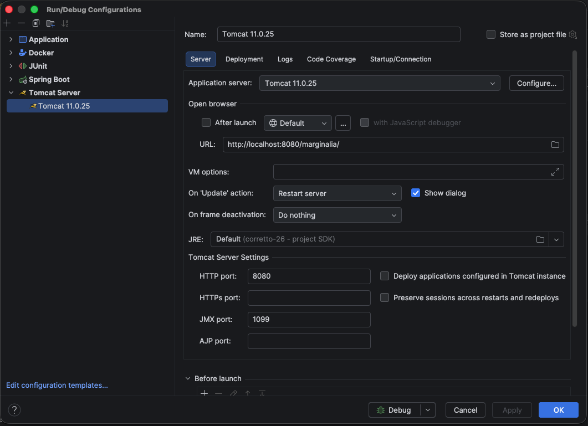

Building from source
This page shows how to build Marginalia, run it on your machine while you work on it, and build the plugins and this manual. Packaging for release (the Docker image, the desktop app, CI) is covered in Packaging & releases.
Requirements
The first build downloads a lot (Maven dependencies, Node.js, npm packages) and takes several minutes. Later builds are faster.
Building the application
The application is the Maven project in marginalia/:
cd marginalia
mvn package # builds and tests, WAR in target/marginalia-1.0.0.war
mvn package -DskipTests # the same without tests
mvn install -DskipTests # also installs the WAR and the classes JAR into ~/.m2 (needed by plugins)What a build does, in order:
-
git-commit-id-pluginwritesgit.properties(commit id, time, closest tag) into the classes. -
vaadin-maven-pluginprepares the frontend (prepare-frontend): it generatespackage.json,viteconfig and the files insrc/main/frontend/generated/(ignored by Git) and downloads Node.js if needed. -
maven-compiler-plugincompiles the sources, thenaspectj-maven-plugincompiles them again with the AspectJ compiler and weaves the Spring aspects in (seeAspectJ weaving below). The woven classes intarget/classesare the ones that get packaged. -
Tests run (
maven-surefire-plugin), seeRunning the tests . -
vaadin-maven-pluginbuilds the frontend bundle (build-frontend). -
maven-war-pluginpackagestarget/marginalia-1.0.0.war(about 200 MB) and, because ofattachClasses, alsotarget/marginalia-1.0.0-classes.jar- the application classes that plugins compile against.
Outputs in marginalia/target/:
Development and production mode
Vaadin runs either in development mode (frontend served from a development bundle that Vaadin builds into
src/main/bundles/, ignored by Git; Vaadin's dev tools available, more checks) or in production mode (optimized frontend
bundle, no dev tools). The mode is decided by META-INF/VAADIN/config/flow-build-info.json, the build info that
vaadin-maven-plugin writes:
-
prepare-frontend(every build, alsomvn compileandmvn jetty:run) writes a development build info with the absolute paths of your checkout intotarget/classes; -
build-frontend(inprepare-package, so onlymvn package/install) builds the optimized bundle, writes a production build info into the WAR and removes the development one fromtarget/classes.
So mvn package always produces a production WAR - the one the Dockerfile, the desktop profile and CI use, and
the one to deploy. Nothing has to be copied around. A build info in src/main/resources is never packaged into the
WAR (maven-war-plugin excludes META-INF/VAADIN/config/flow-build-info.json*).
Development mode is for running from the IDE (see mvn jetty:run. Without a build
info Vaadin also starts in development mode and finds the project by the vaadin.project.basedir system property,
the classpath or the working directory.
To check a WAR:
unzip -p target/marginalia-1.0.0.war WEB-INF/classes/META-INF/VAADIN/config/flow-build-info.json # "productionMode" : trueAspectJ weaving
Marginalia relies on compile-time AspectJ weaving with the spring-aspects library: Vaadin components are
created with new, not by Spring, so classes annotated @Configurable (all routes, the workspace, dialogs, parts...)
get their @Autowired fields injected by the woven AnnotationBeanConfigurerAspect.
Transactions are not woven: @CommonTx, @CommonTxReadOnly and @NoTx are applied by Spring's class-based
proxies around the service beans (see Services).
If the classes are compiled by plain javac, nothing fails at build time, but at runtime every @Autowired field of a
UI class is null and the first screen fails with a NullPointerException. Maven always uses ajc; in your IDE,
make sure the AspectJ compiler is used too (see
The compiler also keeps parameter names (-parameters) and all local variables (preserveAllLocals): extensions
read method arguments and local variables of @Extendable methods by name, so don't remove these options.
Running locally
Marginalia is a plain WAR without an embedded server, so you run it in a servlet container: from the IDE, with
mvn jetty:run, in a local Jetty, or in Docker.
Keep your development data separate
Marginalia keeps everything in ~/.marginalia (System.getProperty("user.home") + .marginalia), the same folder
the desktop app uses. To keep test data away from your real books, start the container with another home folder:
-Duser.home=/path/to/dev-homeThe folder /path/to/dev-home/.marginalia is created on the first start. Delete it to start over with an empty
installation (you'll be asked to create the administrator again).
JVM options
The extension mechanism installs a ByteBuddy agent into the running JVM when the application starts. On a JDK this works without options, but recent JDKs print a warning about dynamically loaded agents. To silence it and allow the agent to attach to its own process, add:
-XX:+EnableDynamicAgentLoading -Djdk.attach.allowAttachSelf=trueThese are the options the desktop app and the tests use.
IntelliJ IDEA
-
Open the repository root; IntelliJ imports
marginalia/pom.xml(and the plugin POMs, if you add them as Maven projects). -
Settings → Build, Execution, Deployment → Compiler → Java Compiler: set Use compiler to Ajc, with the path to
aspectjtools-1.9.25.1.jarfrom your Maven repository, and Delegate to Javac checked (javac is then used only for modules without aspects).spring-aspectsmust be on the aspect path of themarginaliamodule (its AspectJ facet). Add-parametersto the additional command line parameters of the module. -
Add a Tomcat Server → Local run configuration (Tomcat 11), deploy the artifact
marginalia:war exploded, and add theJVM options and-Duser.home=...to VM options. -
Run it and open the URL shown in the run configuration, e.g.
http://localhost:8080/marginalia/when the application context is/marginalia.
IntelliJ builds the exploded WAR itself, without the Vaadin plugin, so the application runs in
- add
-Dvaadin.project.basedir=/path/to/Marginalia/marginaliato VM options (simplest, survives Rebuild Project), or - run
mvn vaadin:prepare-frontendinmarginalia/and copy the generatedtarget/classes/META-INF/VAADIN/config/flow-build-info.jsonto the same path undersrc/main/resources/(ignored by Git and never packaged into the WAR, but IntelliJ copies it into the exploded WAR on every build).
Don't deploy target/marginalia-1.0.0/ (the exploded WAR from mvn package) from the IDE - it is a production build.

Marginalia works under any context path. Login cookies are named after the context, so a login saved under
/marginalia is separate from one saved under /.
Java changes need a redeploy (Update application → Restart server).
Local Jetty
To run the built WAR the way the Docker image does, download Jetty 12
(jetty-home), create a Jetty base with the same modules and drop the WAR in:
export JETTY_HOME=/path/to/jetty-home-12.1.10
mkdir -p ~/jetty-marginalia && cd ~/jetty-marginalia
java -jar $JETTY_HOME/start.jar --create-startd \
--add-modules=server,http,ee11-deploy,ee11-websocket-jakarta,ee11-webapp,ee11-jsp
cp /path/to/Marginalia/marginalia/target/marginalia-1.0.0.war webapps/ROOT.war
java -XX:+EnableDynamicAgentLoading -Djdk.attach.allowAttachSelf=true -Duser.home=/path/to/dev-home \
-jar $JETTY_HOME/start.jar jetty.http.port=8080Marginalia is then at http://localhost:8080/. ee11-websocket-jakarta is required: the UI is updated through a
push WebSocket.
mvn jetty:run
The quickest way to run from the sources, without an IDE or a server installation. The Jetty 12 Maven plugin
(jetty-ee11-maven-plugin) runs the application from target/classes and src/main/webapp inside the Maven JVM, so
the MAVEN_OPTS:
cd marginalia
export MAVEN_OPTS="-XX:+EnableDynamicAgentLoading -Djdk.attach.allowAttachSelf=true"
mvn -DskipTests jetty:run # http://localhost:8080/
mvn -DskipTests -Djetty.http.port=9090 jetty:run # another portThe application runs in Ctrl+C. Java changes need a restart.
Development data
To -Duser.home=... to
MAVEN_OPTS together with -Dmaven.repo.local=$HOME/.m2/repository - user.home also moves Maven's own local
repository, which would otherwise be downloaded again into the development home.
Docker
From the repository root:
docker compose up --buildThe image is built from the sources in marginalia/ (tests skipped) and the data is kept in ./data in the
repository. See Server (Docker) for the configuration and
Packaging & releases for how the image is built.
Logs
Marginalia logs to standard output with log4j 1.x (reload4j). There are two configurations:
-
src/main/resources/log4j.properties- development, used fromtarget/classesby IDE runs andmvn jetty:run. Thecom.github.enercciologgers are atDEBUG, so a generation logs each pipeline step and the activated lore. -
src/main/resources-release/log4j.properties- release, everything atINFO.mvn packageputs it into the WAR in place of the development one, so the Docker image, the desktop app and any other deployed WAR log no story content (see Packaging & releases).
In the desktop app the output goes to ~/.marginalia/desktop/logs/.
Running the tests
mvn test # all tests
mvn test -Dtest=LorebookActivationTest # one class
mvn test -Dtest='Backup*Test' # a pattern
mvn test -Dtest='MacroRenderingTest#name' # one methodThe tests start the real Spring XML configuration (without OSGi and the instrumentation agent) against a SQLite
database in target/test-home/ctx-*, and talk to a fake OpenAI-compatible server, so no network, model or API key is
needed. RuntimeInstrumentationTest installs the ByteBuddy agent into the test JVM; Surefire passes the needed JVM
options. Testing describes the test base and how to write tests.
Building the plugins
The five bundled extensions in marginalia/plugins/ are separate Maven projects. They compile against the classes
JAR of the application, so install the application first:
cd marginalia
mvn install -DskipTests
cd plugins/chaptermarker # or authorsnote, lorebookvcs, reviewer, sidequery
mvn package # target/chaptermarker-1.0.0.jarLoad the JAR in Admin → Extensions of your running instance, or copy it into .marginalia/extensions of your
development home before starting. Rebuild the plugins whenever you change classes they use - they are built for one
exact version of the application. See Plugin development.
Database schema changes
The schema is created and upgraded by Flyway from src/main/resources/migration/V<n>__<name>.sql; Hibernate only
validates it (hibernate.hbm2ddl.auto=validate), so an entity change without a migration makes the application fail
on start.
com.github.enerccio.tools.GenerateFlywayDiff (in src/main/java/com/github/enerccio/tools/) helps write the
migration: it compares the entities listed in persistence.xml with an existing database and prints the SQL Hibernate
would run to update it. Run it from the repository root (it reads marginalia/src/main/webapp/config/persistence.xml)
with the same -Duser.home as your development instance - it uses the database in <user.home>/.marginalia. Review
the output before using it: Hibernate's SQLite updates are a starting point, not a finished migration.
Database & migrations explains the rules for migrations.
Building the manual
The manual is a Retype site. Sources are in manual/, the configuration is retype.yml in the
repository root, and the generated site is written to docs/ and served by GitHub Pages from the master branch.
npm install --global retypeapp # or: dotnet tool install retypeapp --global
retype start # live preview at http://localhost:5000
retype build # writes docs/Commit docs/ together with the changed sources. Images go into manual/images/; the screenshots still to be made
are listed in TODO.IMAGES.md.